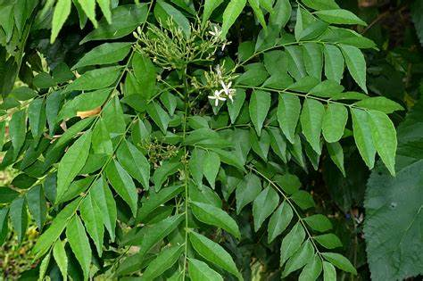

Overview
Botanical Name: Murraya koenigii
Family: Rutaceae
Classification (Gana): Aacharya Charaka: Kanthya, Sangyasthapana Mahakashaya
Regional Names
- Gujarati: Mitho Limdo
- Hindi: Kadi Patta
- Malayalam: Kariveppu
- Telugu: Karivepaku
- Tamil: Kariveppikai
- English: Curry Leaves
External Morphology
5-10 feet high tree
Useful Parts
Important Phytoconstituents
- Calcium
- Carbohydrates
- Glycosides
- Amino Acids
- Sterols
- Vitamin A, B, C, E
Rasa Panchak
- Rasa: Tikta (Bitter), Kashaya (Astringent), Madhura (Sweet)
- Guna: Laghu (Light to digest), Ruksha (Dry)
- Virya: Shita (Cool)
- Vipaka: Katu (Pungent)
Action
Kaphapittahara (Balances Kapha and Pitta dosha)
Therapeutic Indications
- Kandughna (Treats pruritus)
- Kusthaghna (Useful in skin disorders)
- Deepan (Appetizer)
- Vishahara (Anti-poisonous)
- Balya (Bulk-promoting)
- Keshya (Good for hair)
Therapeutic Uses
- Palitya: Curry leaves paste with coconut oil is applied to the scalp for premature hair graying.
- Mukhpaka: Paste of leaves is applied to mouth ulcers.
- Kandu: Oil prepared with curry leaves is beneficial in pruritus.
Dose
Formulations
- Kaidaryadi Kashaya
- Kalashakadi Kashaya
Adverse Effect
Not Known